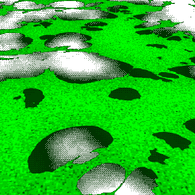
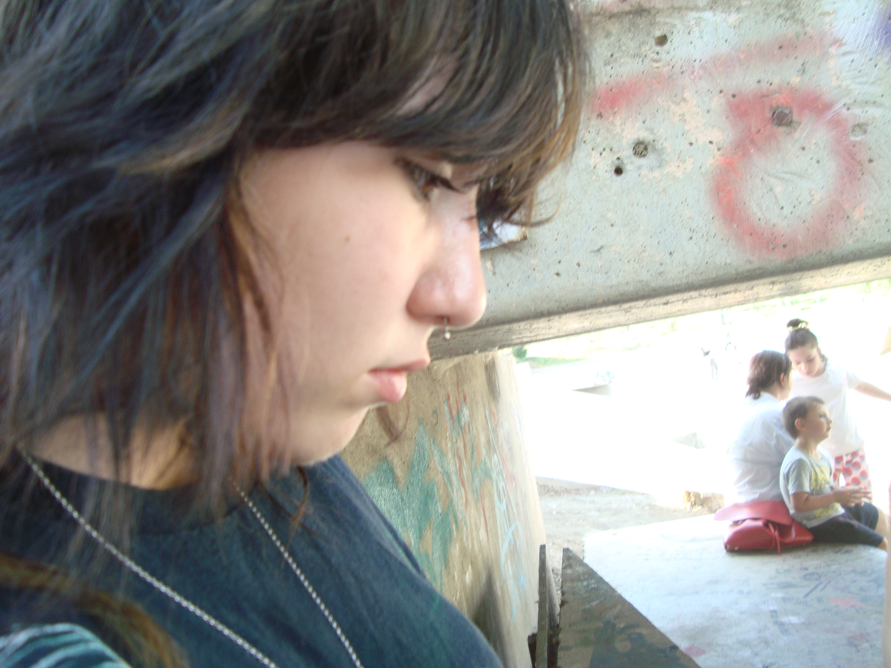

Then, I don't know why, but something inside me snapped. I started yelling at the top of my lungs, and I insulted him and told him not to waste his prayers on me. I grabbed him by the collar of his cassock. I was pouring out on him everything that was in my heart, cries of anger and cries of joy. He seemed so certain about everything, didn't he? And yet none of his certainties was worth one hair of a woman's head. He wasn't even sure he was alive, because he was living like a dead man. Whereas it looked as if I was the one who'd come up emptyhanded. But I was sure about me, about everything, surer than he could ever be, sure of my life and sure of the death I had waiting for me. Yes, that was all I had. But at least I had as much of a hold on it as it had on me. I had been right, I was still right, I was always right. I had lived my life one way and I could just as well have lived it another. I had done this and I hadn't done that. I hadn't done this thing but I had done another. And so? It was as if I had waited all this time for this moment and for the first light of this dawn to be vindicated. Nothing, nothing mattered, and I knew why. So did he. Throughout the whole absurd life I'd lived, a dark wind had been rising toward me from somewhere deep in my future, across years that were still to come, and as it passed, this wind leveled whatever was offered to me at the time, in years no more real than the ones I was living. What did other people's deaths or a mother's love matter to me; what did his God or the lives people choose or the fate they think they elect matter to me when we're all elected by the same fate, me and billions of privileged people like him who also called themselves my brothers? Couldn't he see, couldn't he see that? Everybody was privileged. There were only privileged people. The others would all be condemned one day. And he would be condemned, too. What would it matter if he were accused of murder and then executed because he didn't cry at his mother's funeral? Salamano's dog was worth just as much as his wife. The little robot woman was just as guilty as the Parisian woman Masson married, or as Marie, who had wanted me to marry her. What did it matter that Raymond was as much my friend as Celeste, who was worth a lot more than him? What did it matter that Marie now offered her lips to a new Meursault? Couldn't he, couldn't this condemned man see ... And that from somewhere deep in my future ... All the shouting had me gasping for air. But they were already tearing the chaplain from my grip and the guards were threatening me. He calmed them, though, and looked at me for a moment without saying anything. His eyes were full of tears. Then he turned and disappeared.



i don't want to be me